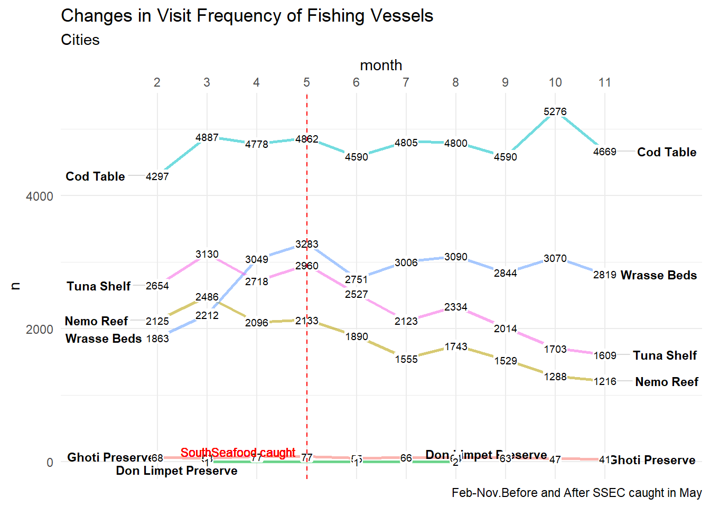
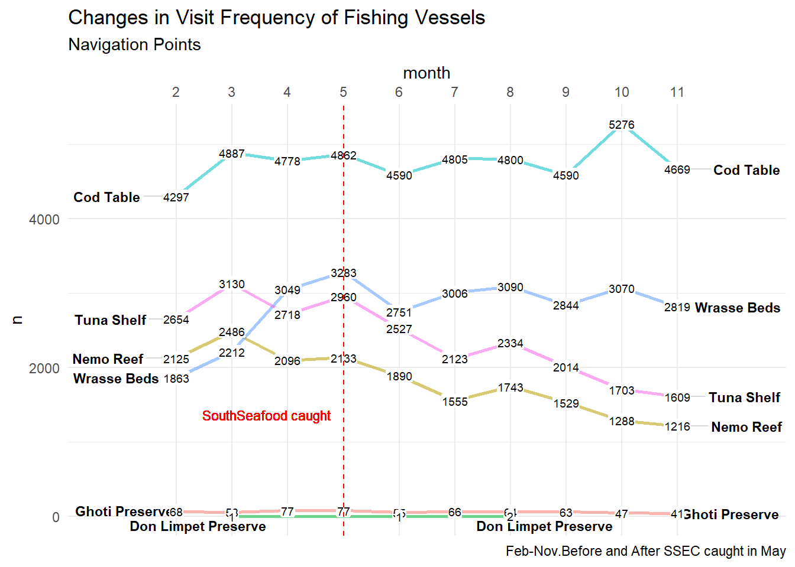

New IUU Behaviours
Setting the stage
In order to understand the change in fishing activities, we first have to determine the date where SouthSeafood Express Corp was caught. The final activities of SouthSeafood’s vessels are on 2035-05-14 at City of Lomark for Snapper Snatcher (snappersnatcher7be) and 2035-05-12 at City of Himark for Roach Robber (roachrobberdb6) according to the transponder pings. Hence, we can conclude that the SouthSeafood is caught for illegal fishing, and had ceased operating its fishing vessels since 2035-05-14. We will use this date as the cut off to define before and after SouthSeafood was caught.
Changes in Commercial Fishing
Firstly, we take a look at the species caught across the months (Feb to Nov 2035).
For recapitulation, we know that Sockfish, Offidiaa, and Helenaa are fish species that are unique to the three Preserves. From the two plots above, we can derive initial conclusion that there is an usual increase in Sockfish catch after SouthSeafood was caught in mid-May. We also see a minor increase in Helenaa between Jun to Aug, and later in Oct to Nov. The spike in Offidiaa catch begins in Sep and grows gradually to Nov. There is also appearance of Salmon from Jul onwards.
Insights from the visualisation
Combining the information above, we can make the following two hypothesis about the changes in fishing activities in Oceanus after SouthSeafood was caught:
The fishing vessels switched to Don Limpet Preserve for IUU fishing. Tell tale sign is the increase in Sockfish catch, which is species unique to Don Limpet Preserve. This also explains the slight increase in Helena catch from Jun.
The fishing vessels moved into Ghoti Preserves from Sep onwards for IUU fishing. Tell tale sign is the increase in Offidia catch from Sep, which is species unique to Ghoti Preserve.
Salmon start to appear in the cargoes in various cities. Salmon is a deep sea fish species that is not found in any of the fishing ground in Oceanus
Understanding the Activities by Locations
The visualisation below allows analyst to understand the activities of each locations in Oceanus. Any activities not mentioned in these stated activities could be signs of IUU in Oceanus.
Here are a few signals of IUU:
Fishing in areas other than the fishing grounds - signaled by excessive dwell time in the area.
At Ecological Preserves
At Navigation points / Exits
Transhipping - signaled by excessive dwell time and vessels that has not dock at port for months.

Understanding Vessel Movements
Code
# Aggregate the transponder ping by location
location_ping_agg <- vessel_movement %>%
group_by(loc, type) %>%
summarize(total_ping = n()) %>%
ungroup()
# Reorder to match the above
location_ping_agg$loc <- factor(location_ping_agg$loc,
levels = c("City of Himark",
"City of Lomark",
"City of Haacklee",
"City of Paackland",
"City of South Paackland",
"City of Port Grove",
"Ghoti Preserve",
"Nemo Reef",
"Don Limpet Preserve",
"Cod Table",
"Wrasse Beds",
"Tuna Shelf",
"Exit North",
"Exit South",
"Exit East",
"Exit West",
"Nav 1","Nav 2", "Nav 3",
"Nav A", "Nav B", "Nav C", "Nav D", "Nav E"))
# Bar plot
ggplot(location_ping_agg, aes(x = loc,
y = total_ping,
fill = type)) +
geom_bar(stat = "identity") +
labs(title = "Number of Transponder Ping by Locations",
x = "Locations",
y = "No. of Transponder Ping",
fill = "Locations") +
theme(axis.text.x = element_text(angle = 45, hjust = 1))Insights from this visualisation
There is abnormally high number of pings for fishing vessels at Nemo Reef. Since Nemo Reef is a Ecological Preserve, the correct safe navigation around it is through Nav D.
Given that the fish species (Wrasse, Tuna, Birdseye, Beauvoir) in Nemo Reef, can also be found in other fishing grounds, there is likelihood of IUU here. The presence of Helenaa is the only tell-tale sign if a fishing vessel indeed fish in Nemo Reef.
There is abornormally high number of pings for fishing vessels at Exit East. Since the activities in Exit E are international shipping and Deep Sea Fishing, it is not a designated Fishing Ground within Oceanus. Thus, we should be only expecting cargo vessels through Exit E, as observed in other exits. :::
Understanding the vessel movements
Understand Average Dwell by Location
Code
vessel_movement$loc <- factor(vessel_movement$loc,
levels = c("City of Himark",
"City of Lomark",
"City of Haacklee",
"City of Paackland",
"City of South Paackland",
"City of Port Grove",
"Ghoti Preserve",
"Nemo Reef",
"Don Limpet Preserve",
"Cod Table",
"Wrasse Beds",
"Tuna Shelf",
"Exit North",
"Exit South",
"Exit East",
"Exit West",
"Nav 1","Nav 2", "Nav 3",
"Nav A", "Nav B", "Nav C", "Nav D", "Nav E"))
ggplot(vessel_movement, aes(x = loc,
y = dwell,
fill = loc_type)) +
geom_boxplot() +
theme_minimal() +
labs(title = "Median Dwell Time by Location",
x = "Location",
y = "Median Dwell Time") +
scale_y_continuous(limits = c(0, 300000)) +
coord_flip()
Insights from this visualisation
For the cities, the outliers can be explained by the extend stay due to repair and replenishment purposes.
For all three ecological preserves, there are many outliers, and this is a tell-tale sign of extended stay in the preserves by fishing vessels for IUU fishing.
For the fishing grounds, the extended stay of fishing vessels may be explained by conducting of transshipment between small fishing vessels and bigger reefer/cargo ships, where the small fishing vessels stay at the location for fishing. There are fishing vessels that are out in the sea for months.
For the navigation points, Exit E display signs of abnormality due to its high number of outliers compared to other navigation points that are used for international shipping (Exit North, Exit South and Exit West). Nav 1 and Nav A may also be investigated since there are high numbers of outliers, and also, they are at the fringe of the Ghoti and Don Limpet Preserves respectively.
The IUU Behaviours

Insights from this visualisation
- For the City of Himark, there is a hike in visit frequency till the time SSEC got caught in May. Then the frequency decline all the way till Nov.This may be signs that the fishing vessels are avoiding to dock at City of Himark.


Conclusion from the visualisation
After SSFEC arrest:
Abnormally high frequency of visit to Exit East. Upward trend of frequency of visit from Feb to Nov. Exit East offers deep sea fishing.
Drastic drop in frequency of visit to the City of Haacklee. Investigate into changes in fish species in the cargoes through the months going to the City of Haacklee.
Drop in frequency if visit in both Ghoti Preserve and Nemo Reef. However, the drop in Nemo Reef in actual value is greater. Nemo reef is a good area for violation of IUU as vessels have access to fish species in Nemo Reef that are common to the three fishing grounds, except for Helenaa species. Also, Nemo Reef sits between the two fishing grounds, maske good excuse for vessels to cut across it rather than using Nav D as safe navigation around Nemo Reef.
Insights from this visualisation
We notice that there is no significant change in activities in Exit East after SSEC got caught. However, this location remains highly suspicious for IUU as Exit East are meant for navigation purposes and vessels not meant to have overly long period in this area not designated for fishing.
This location offers opportunity for deep sea fishing, which may be unregulated (IUU), since we observe many instances of outliers (long dwell)
Conclusion
To conclude here are a list of findings on IUU in Oceanus:
Delivery of illegally fished fish species (Sockfish, Offidiaa, Helenaa, and Salmon) can be found delivered to all five ports even after SSEC got caught.
The fishing vessels switched to Don Limpet Preserve for IUU fishing after SSEC was caught. Tell tale sign is the increase in Sockfish catch, which is species unique to Don Limpet Preserve. This also explains the slight increase in Helena catch from Jun.
The fishing vessels moved into Ghoti Preserves from Sep onwards for IUU fishing. Tell tale sign is the increase in Offidia catch from Sep, which is species unique to Ghoti Preserve.
Salmon start to appear in the cargoes in various cities. Salmon is a deep sea fish species that is not found in any of the fishing ground in Oceanus.This could be deep sea fishing done in Exit East, where many fishing vessels are found there with exceptionally high dwell.